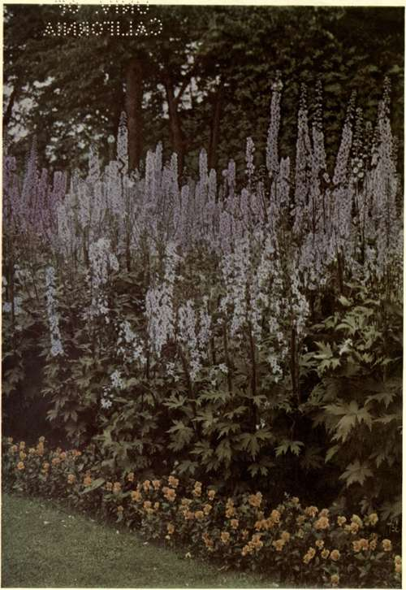

Preface
Description
This section is from the book "What England Can Teach Us About Gardening", by Wilhelm Miller. Also available from Amazon: What England Can Teach Us About Gardening.
Preface
The objects of this book are as follows:
1. To help toward making America one great garden as England is.
2. To set forth the noblest ideals that England can give us in all the different departments of gardening (such as landscape, formal, wild, water, rock, peat and rose gardening) and contrast these with the less noble ideals which now prevail in America.
3. To show how we waste millions of dollars on material we should never buy and on effects we can never imitate.
4. To discover what the best English effects are and how we can reproduce the spirit of them with long-lived material.
5. To help lay the foundations of an American style of gardening.
This book is intended as a radical departure in the literature of horticulture in purpose, method, and manner. The purpose of Old World gardening books and periodicals is usually to record progress — not to stimulate it. The purpose of this book is to inspire people to make more and better gardens.
As to method, this work is comparative as opposed to enthusiastic. It is a common thing for garden writers to gush about flowers. I cannot believe that sentimentality and fine writing help much toward more and better gardens. I believe it is helpful to find out what effects are best and how to get them. One reason why English books, as a rule, are of so little use to us, is that the Englishman is a born collector, while the American wants results. I admire the Englishman for liking every plant that grows — even the humblest weed, but I think it a pity to wince at any suggestion that one plant is better adapted to a given purpose than another. If hemlock makes a better hedge than Norway spruce, why not say so? Why continue to waste thousands of dollars on a plant that fails to do the job? The Englishman does well to love every plant separately for its own sake, but the life-blood of science is the comparative method. We have big things to accomplish in America and we want the best there is to be had for every purpose.
As to manner — my pen falters at dedicating to so finished a literary man as Moses Coit Tyler a book that would probably seem to him the negation of everything literary. I have used slang, which he abhorred, and I have written like one business man to another, instead of following the classical models that I studied in college. But this is an age of "new faces, other minds." It is an age of "big business," and the big things in gardening are generally done by successful business men. The wives may plan the gardens, but the husbands usually pay for them, and therefore I address chiefly the men — men who can give and take hard knocks good-naturedly. For you men need some straight-from-the-shoulder blows. You do not love gardening enough. You gag at the cost. And you do not employ the best advisers. You may be good buyers of bonds, but not of plants. You can cut the price, but you can't get the best results that way. What you need is to study the subject matter of gardening, which is quite as important and interesting as sport.
The plain truth is that we can never get an American style of gardening until we get new kinds of books and periodicals. The Old World models will not do. This is clearest in the case of the magazines. The commonest type in England is the penny weekly, which is not subscribed for, but bought from news-stands. These weeklies contain little that would help our beginners. They are full of news of shows and prizes, accounts of meetings, descriptions of new and rare plants, abstracts of^bulletins and papers, notes of travel, letters from foreign correspondents, reviews of genera in alphabetic order, plants named for beginners, descriptions of nurseries and estates, short letters from gardeners, and obituaries. All these items are respectable and eventually we shall get to them, but at the present time no American periodical could live a year which fed its customers on such small fare. We need heartier food. The scrap-book of short articles is all well enough, but we also want long articles about the most important subjects.
So too with books. It is not merely the difference in climate; the Old World models won't do. The English are far ahead of us in books by skilled amateurs who describe their own gardens, but too often they are content with the dry husks of history, especially family history, and with heaping alphabets upon alphabets. But the one blight which I dread most is the habit of assuming that the reader knows it all. No other attitude is considered polite. Therefore all facts and instructions must be imparted indirectly and casually. We want to know just how to grow everything worth while. We like our garden writers to assume that we know nothing or have forgotten, and want to know all about it in the quickest time. Our best writers will follow the national instinct for picking at the biggest jobs and hitting them hardest. The new American horticultural literature must have simplicity, directness and force, or it will be merely parasitic upon the trade.
Another feature of this book that may seem unconventional is the citation of current American periodicals, which may look to some like advertising. But Darwin cited the Gardeners1 Chronicle, and the reader may rest assured that periodicals could not live a day if they had to depend on recommendations made in books. The object of these citations is to help students — men and women who can build better than I. At the end of each chapter I have cited the best books on each special subject, but with the exception of Downing's "Landscape Gardening," Olmsted's- scattered writings, Charles Eliot, Bailey's "Cyclopedia of American Horticulture," and Blanchan's "American Flower Garden," we have few books that have contributed much toward an American style of gardening. And the bulk of all these is small compared with the bulk of the magazines which give thousands of pictures of American effects. The great landscape gardeners of the future must, during their training days, pore over the old files of Garden and Forest, Country Life in America, The Garden Magazine, etc.
The books that seem to be most popular in England are arranged alphabetically. The books that will help Americans most are those which are arranged logically, by natural subjects. The alphabetical method is absolutely necessary in indexes, but nowhere else. We shall not get along very fast or far if our books all begin with Aaron's Beard, and Abele. The alphabetical method of compiling books is a sign of an old and finished country. New countries need books that are brimming with new ideas, for the ideas must first be invented, then fight, and survive or perish according to the law of fitness. And if nine out of ten new ideas fail, we should not worry about the nine, but be thankful for the one new idea that succeeds.
I have been compelled to use the first personal pronoun oftener than I should like. Whenever possible, a different phrase has been used. But an author is morally bound to distinguish between fact and opinion. "One of the greatest curses of modern literature," says a prominent professor of history, "is that authors do not discriminate between what they know and what they think" Gardening is not an exact science, and the building of a new style of gardening is necessarily experimental, so that questions of taste, opinion, and ideals continually recur. Moreover, in all scientific work an investigator is morally bound to tell where and how he got his facts and opinions. Therefore this book is peppered with names of places visited, not from any paltry desire to seem well travelled (for those who come after me will find that I saw very little of England) but because it is the only way of "making types" and indicating standards. For example, the botanist writes "type" on the herbarium specimen from which he describes a new species. The garden writer ought to do likewise. It is not enough to say "the noblest idea connected with water gardening is the naturalizing of water-lilies." He ought to add, "as I saw it at Gravetye." In other words, I would rather be thought immodest than dishonest.
As to the shortcomings of this work, no one can be more painfully conscious than I. Doubtless there are errors of fact and opinion. And there is plenty more to learn from England. Some keen American students ought to go to England to study and report on the autumn and winter beauties, the hedges, the annuals, the fruits, vegetables, garden accessories, societies, and many other features not treated in this work. I have never been to the Pacific coast, and though born in the South I have travelled little there.
Moreover, no one man can create a national style in architecture or gardening. Heretofore, a national style has developed slowly and casually. But I believe the happy day could be hastened by a sort of horticultural survey of America. There must be some garden photographer who is as divinely ordained for such work as Jowett was to translate Plato, or Curtis to portray disappearing types of Indian. Such a man, with a good motorcar and travelling library, could spend a month in a limestone district, for example, and show what are the chief lime-lovers and lime-haters among trees, shrubs, vines, etc. Such a man might discover in five or ten years facts that would save us millions of dollars and several centuries on the long road we must travel before America can be as lovely as England.
For the idea of this book and the chance to realize it I am indebted to Mr. F. N. Doubleday.
Since these chapters appeared in Country Life in America and The Garden Magazine they have been revised and considerably enlarged. In concluding these essays on what England can teach us about gardening, I wish to thank the many readers who have written me words of encouragement from all parts of the country. I had expected that my view-point would be unpopular. Certainly it cannot please either Anglophobes or Anglomaniacs. But evidently there are many Americans who agree with me that we are wasting millions of dollars every year in the literal imitation of English gardening ideas that are wholly unsuited to our climate and ways of life, and that the noblest lesson English gardens can teach us is this: Let every country use chiefly its own native trees, shrubs, vines and other permanent material, and let the style of gardening grow naturally out of necessity, the soil and the new conditions. When we stop imitating and do this, America will soon find herself.
Perennial Larkspurs And Tufted Pansies. Larkspurs Are Probably The Best Hardy Blue Flowers In Cultivation, And Tufted Pansies Are Better For Edging And Carpeting Than Ordinary Pansies Since They Really Bloom Freely Nearly All Summer.
Continue to:
Tags
garden, flowers, plants, England, effects, foliage, gardening